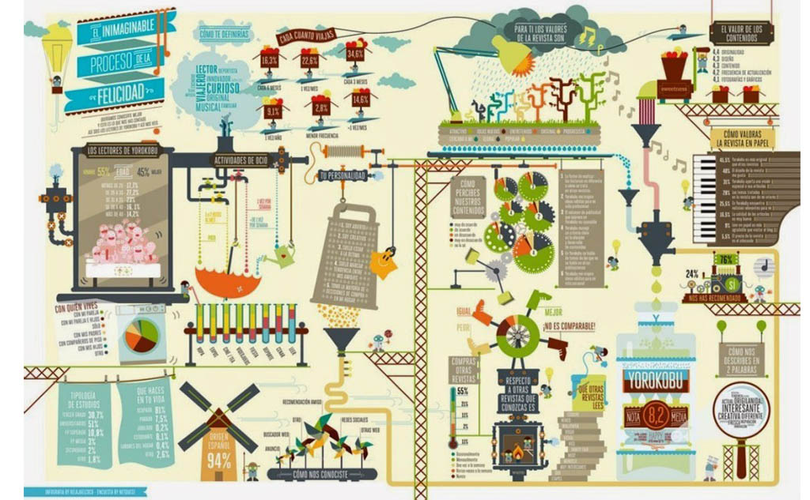
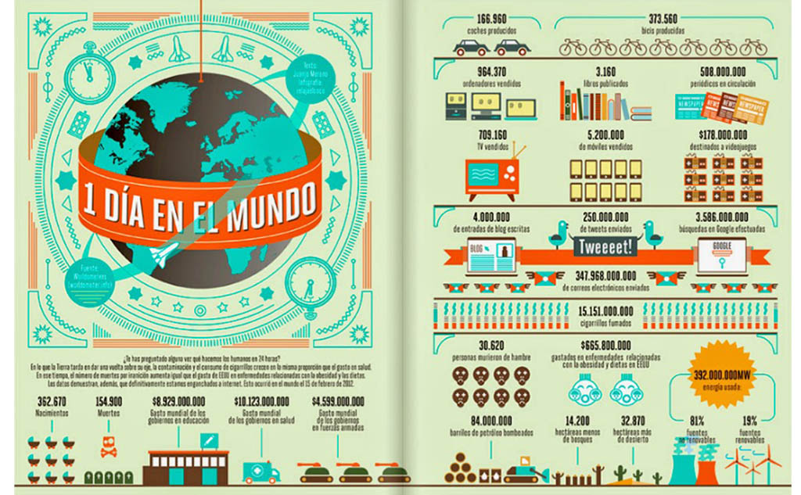
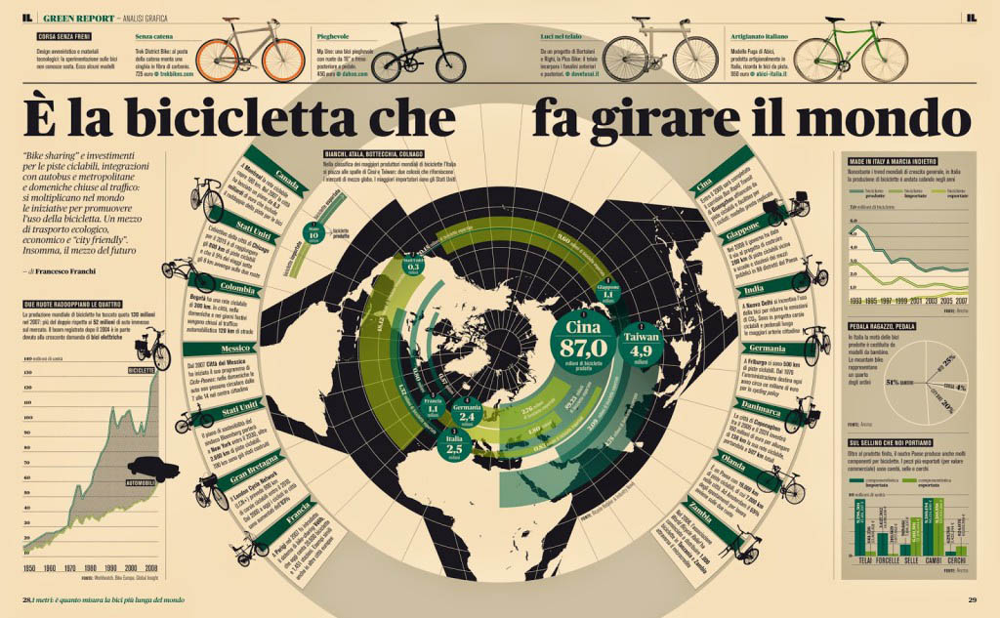
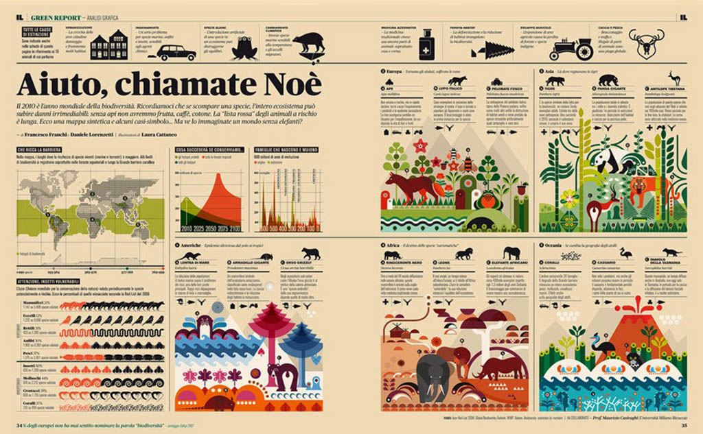
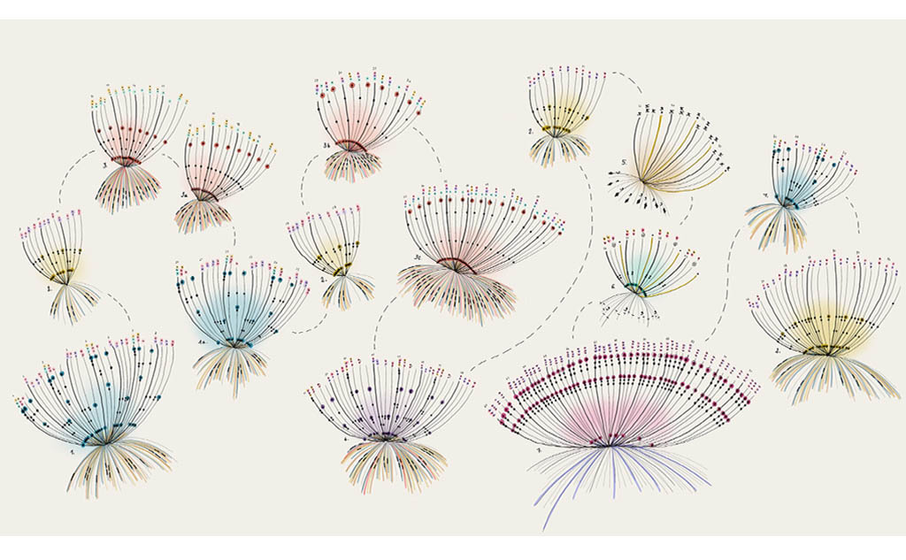
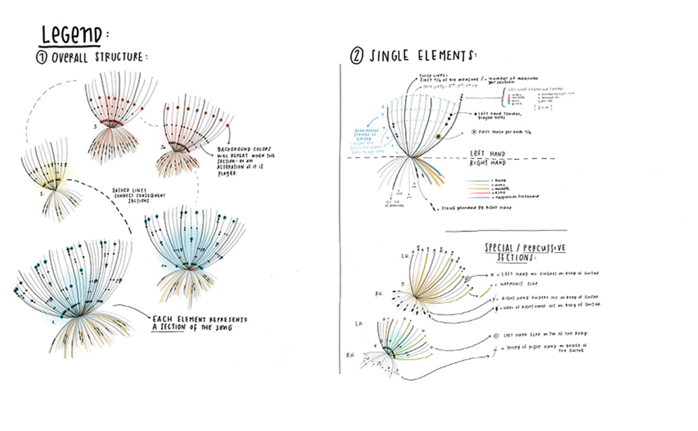
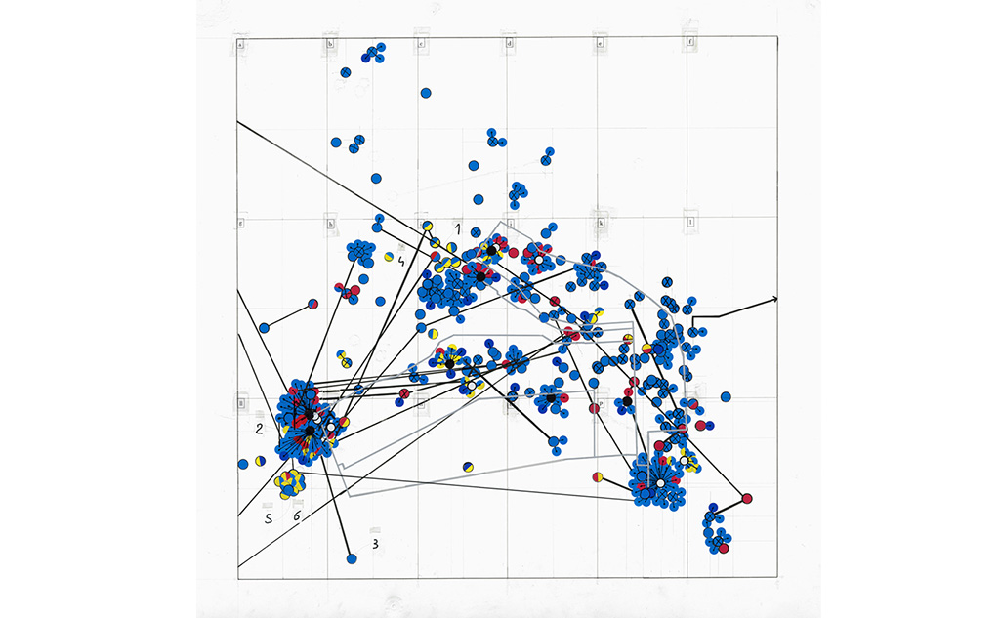
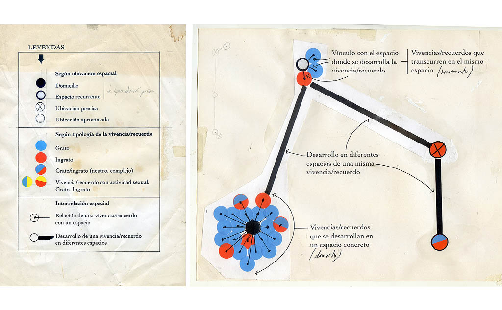

Información en gráficos figurativos

Francesco Furno y Pablo Galeano. El inimaginable proceso de la felicidad.
Publicado en SleepyDAYS.

Francesco Furno y Pablo Galeano. 1 día en el mundo.
Publicado en SleepyDAYS.

Francesco Franchi. Ayuda, llama a Noé.
Publicado en SleepyDays.

Francesco Franchi. Es la bicicleta que hace girar al mundo.
Publicado enSleepDays.
Información en gráficos no figurativos

Giorgia Lupi. Un diálogo entre cuatro manos
Publicado en Giorgia Lupi.

Giorgia Lupi. Leyenda general de la ilustración de datos.
Publicado enGiorgia Lupi.

Jaime Serra. Lo sucedido.
Publicado en Zaveka Infográfica.

Jaime Serra. Leyendas para leer los gráficos.
Publicado en Zaveka Infográfica.